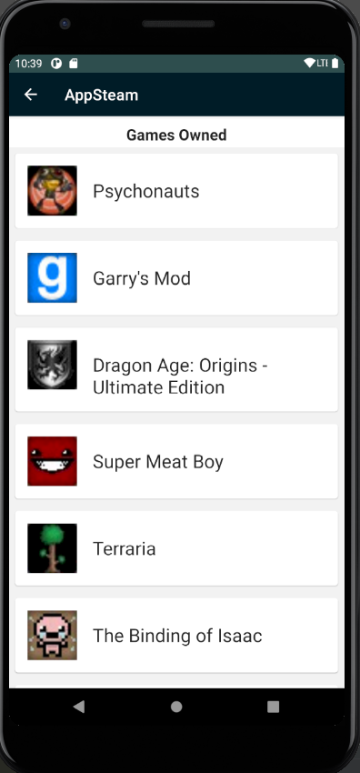
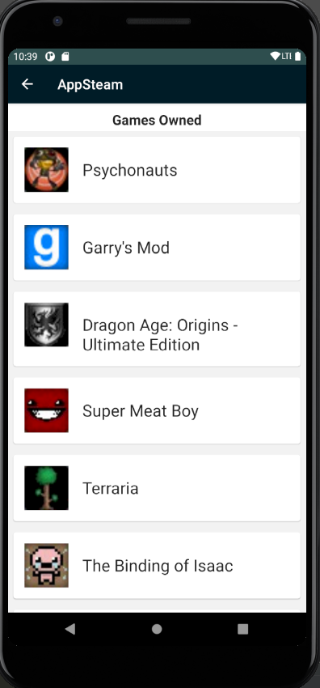

Projects
My projects:
- Capstone project with HP Labs:
This project was my Senior Capstone project at Oregon State University, which I worked on with Devin Swift and Paul Lee.
The summary of the project was to automate the process of altering variables in a CAD (SolidWorks) and use machine learning to narrow the scope of the parameters in order to meet a given objective
In our case, we used a launcher and propellor model to maximize airtime of the propellors we created in SolidWorks
More information can be found on our GitHub
If you're interested in the results of our project, including our more technical papers and experiment data, please send me an email!
-
This project is an application for Android that uses the Steam API to be able to search for users by their IDs, store the data using SQLite, and see what games the user has.
Other notable features include embedded videos, storing user settings, and being able to use implicit intents to share a user's profile, as well as explicit intents to open Steam's website to see new game releases. 
